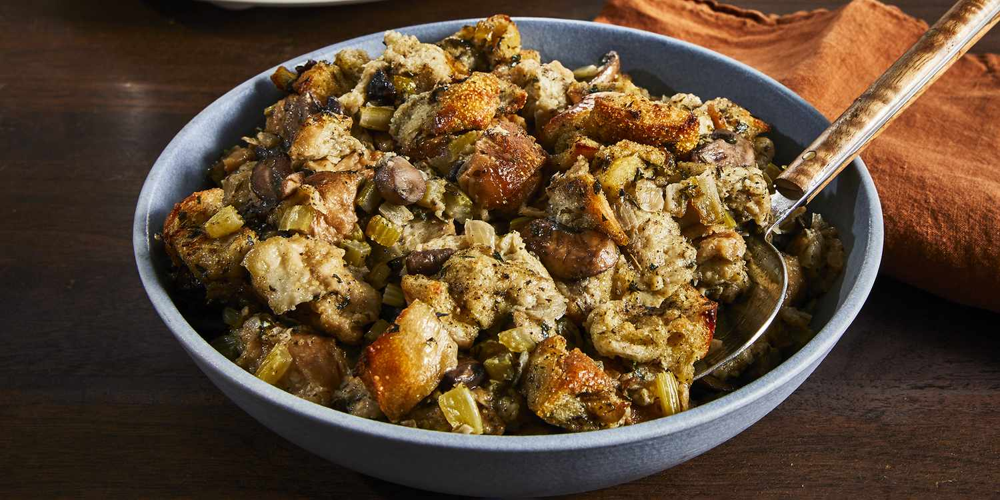

Slow Cooker Stuffing

Description
Oven space comes at a premium around the holidays so use this recipe to move your stuffing out of the oven and into a slow cooker to save you time and space
Ingredients
- 1 cup butter
- 2 cups chopped onion
- 2 cups chopped celery
- 12 ounces sliced mushrooms
- 1/4 cup chopped fresh parsley
- 12 cups dry bread cubes
- 1 1/2 teaspoons salt
- 1 1/2 teaspoons dried sage
- 1 teaspoon dried thyme
- 1 teaspoon poultry seasoning
- 1 teaspoon dried marjoram
- 1/2 teaspoon ground black pepper
- 4 1/2 cups chicken broth, or as needed
- 2 large eggs, beaten
Steps
- Melt butter in a skillet over medium heat. Cook and stir onion, celery, mushrooms, and parsley in butter until slightly softened, 5 to 8 minutes.
- Place bread cubes in a very large mixing bowl. Spoon cooked vegetables over bread cubes. Season with salt, sage, poultry seasoning, thyme, marjoram, and pepper. Pour in enough broth to moisten, then mix in eggs. Transfer mixture to a slow cooker.
- Cover and cook on High for 45 minutes, then reduce heat to Low and cook for 4 to 8 hours.